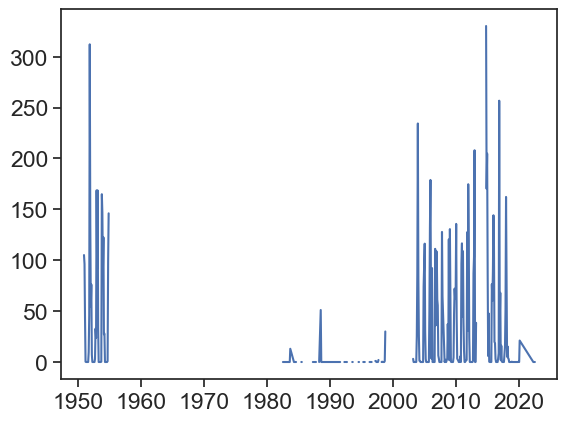
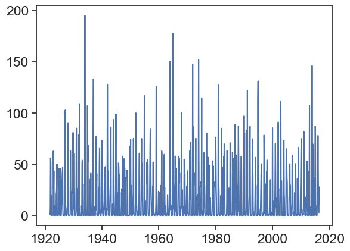

Find station codes in this map. On the left, click on the little wrench (🔧) next to “Global Summary of the Month”, then click on “identify” on the panel that just opened, and click on a station (purple circle). You will see the station’s name, it’s ID, and the period of record. For example, for Ben-Gurion’s Airport in Israel:
BEN GURION, IS
STATION ID: ISM00040180
Period of Record: 1951-01-01 to 2020-03-01
You can download daily or monthly data for each station. Use the function below to download this data to your computer.
Show/hide the code
def download_data(station_name, station_code): url_daily ='https://www.ncei.noaa.gov/data/global-historical-climatology-network-daily/access/' url_monthly ='https://www.ncei.noaa.gov/data/gsom/access/'# download daily data - uncomment the next 2 lines to make this work# urllib.request.urlretrieve(url_daily + station_code + '.csv',# station_name + '_daily.csv')# download monthly data urllib.request.urlretrieve(url_monthly + station_code +'.csv', station_name +'_monthly.csv')
Now, choose any station with a period of record longer than 30 years, and download its data:
download_data('BEN_GURION', 'ISM00040180')
Load the data into a datafram, and before you continue with the analysis, plot the rainfall data, to see how it looks like.
Show/hide the code
download_data('BEN_GURION', 'ISM00040180')df = pd.read_csv('BEN_GURION_monthly.csv', sep=",")# make 'DATE' the dataframe indexdf['DATE'] = pd.to_datetime(df['DATE'])df = df.set_index('DATE')plt.plot(df['PRCP'])

It doesn’t look great for Ben-Gurion airport, lots of missing data! You might need to choose another station… Download data for Beer Sheva, ID IS000051690.
Show/hide the code
download_data('BEER_SHEVA', 'IS000051690')df = pd.read_csv('BEER_SHEVA_monthly.csv', sep=",")# make 'DATE' the dataframe indexdf['DATE'] = pd.to_datetime(df['DATE'])df = df.set_index('DATE')plt.plot(df['PRCP'])

That’s much better! We need to aggregate all data from each month, so we can calculate monthly averages. How to do that?
Show/hide the code
# choose only the precipitation columndf_month = df['PRCP']# calculate monthly meanmonthly_mean = np.array([]) # empty arraymonth_numbers = np.arange(1,13)month_names = [month_abbr[i] for i in month_numbers]for m in month_numbers: # cycle over months (1, 2, 3, etc) this_month_all_indices = (df_month.index.month == m) # indices in df_month belonging to month m this_month_mean = df_month[this_month_all_indices].mean() # this is the monthly mean monthly_mean = np.append(monthly_mean, this_month_mean) # append
Now it is time to create a new dataframe with the monthly means.
Let’s calculate now the Walsh and Lawler Seasonality Index. Write a function that receives a dataframe like the one we have just created, and returns the seasonality index.
http://leddris.aegean.gr/ses-parameters/293-rainfall-seasonality.html#:~:text=Rainfall%20seasonality%20index%20is%20a,in%20relation%20to%20water%20availability
\(R=\) mean annual precipitation \(m_i\) precipitation mean for month \(i\)